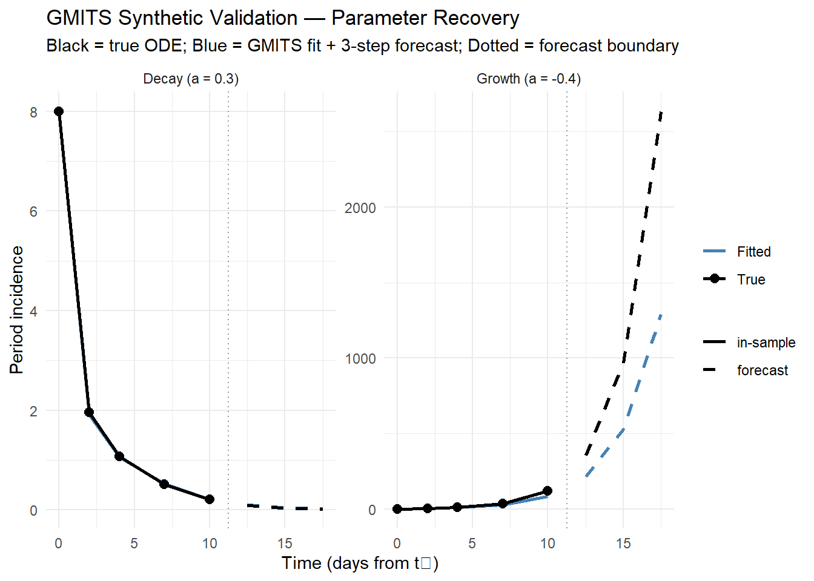
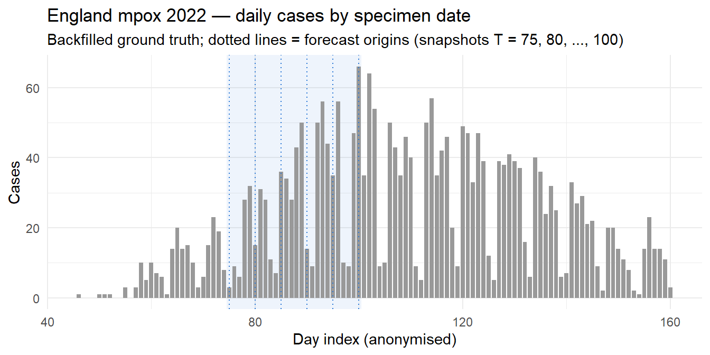
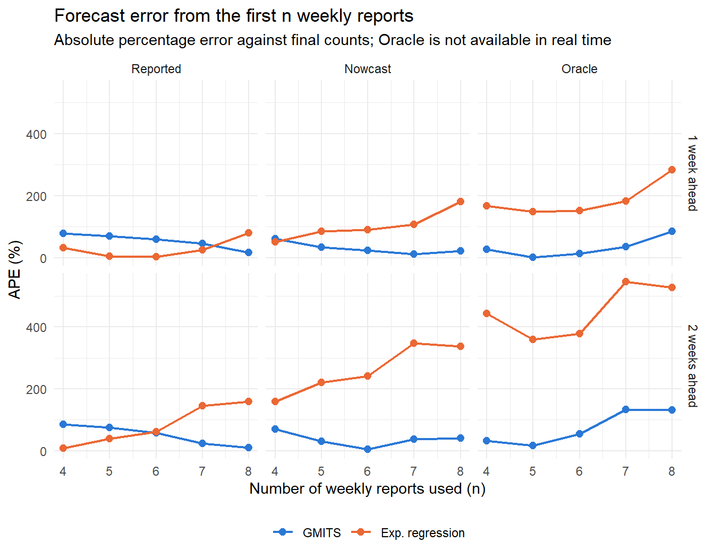
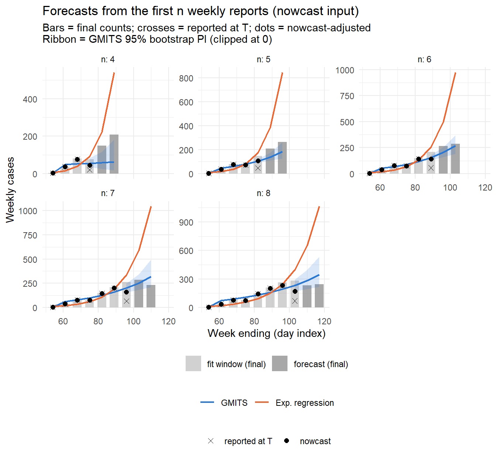
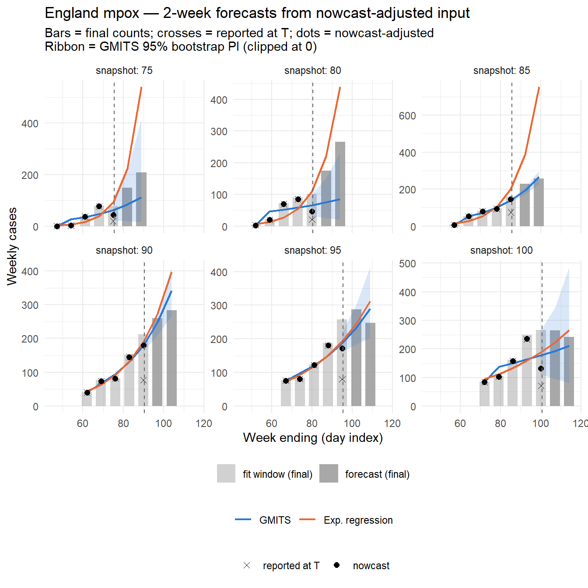
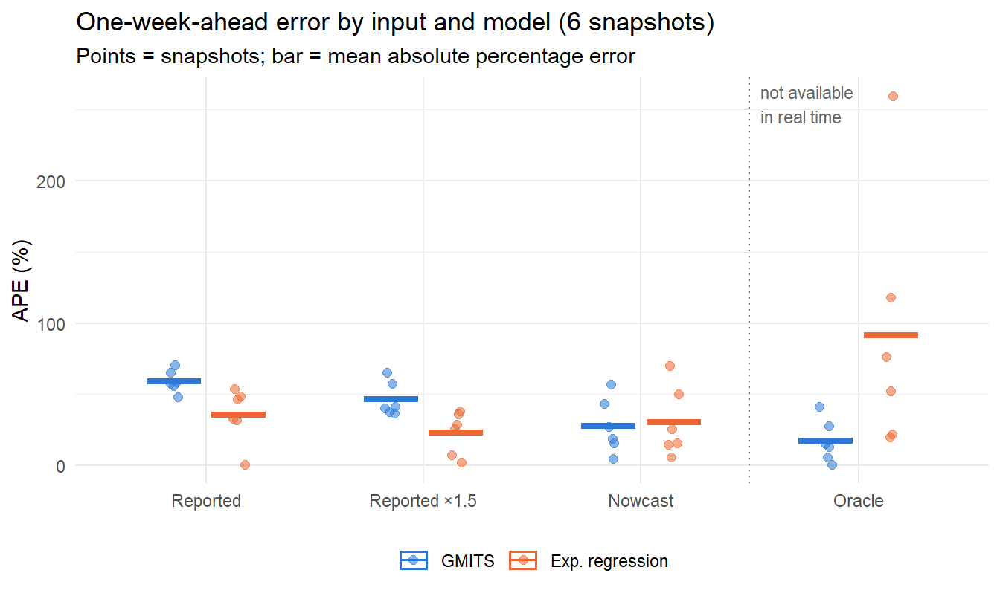

GMITS extends the classical grey-system GM(1,1) model to irregularly spaced reporting intervals, aimed at early-stage outbreak forecasting when only a handful of data points are available. This page collects the shared methodology, checks it on synthetic data, and evaluates it on real-time snapshots of the 2022 England mpox outbreak, forecasting from the first n weekly reports (n = 4–8) as the outbreak unfolded. Earlier applications to two food-borne outbreaks are on the Bongkrekic Acid Food Poisoning (2024) and 2011 Listeria Outbreak pages.
All pages load the same function file,
R/gmits_functions.R. The regression in gmits()
was corrected on 2026-10-13; see the revision history.
# Shared GMITS functions for all portfolio pages.
# Single source of truth: pages load this file via a knitr `file =` chunk,
# and external analyses (e.g. RA/mpox/gmits_england) source() it.
#
# 2026-10-13 fix in gmits(): integrating dx1/dt + a * x1 = b over
# [t_{k-1}, t_k] gives x0_k * dt_k = -a * z_k * dt_k + b * dt_k, so the
# regression is x0_k = -a * z_k + b. The previous version used
# B <- cbind(-z * delta_t, delta_t), which scaled (a, b) by 1 / dt and
# was exact only for dt = 1 (it flipped the sign of a on some irregular
# grids). See D:/KnowledgeVault/research/grey_system/figures/gmits_dt_bug.png
mae <- function(actual, predicted) {
mean(abs(actual - predicted), na.rm = TRUE)
}
mape <- function(actual, predicted) {
valid <- actual != 0
mean(
abs((actual[valid] - predicted[valid]) / actual[valid]),
na.rm = TRUE
) * 100
}
# n_ahead: out-of-sample steps using mean(delta_t) as step size.
# Returns $x0_future (and $t_future as numeric time offsets) when n_ahead > 0.
gmits <- function(count, date, n_ahead = 0) {
valid <- !is.na(count) & !is.na(date)
x0 <- count[valid]
date <- date[valid]
if (length(x0) < 2) {
warning("Not enough valid data points for modeling.")
return(NULL)
}
if (x0[1] == 0) x0[1] <- 1e-3
n <- length(x0)
delta_t <- as.numeric(
difftime(date[2:n], date[1:(n - 1)], units = "days")
)
time_index <- cumsum(c(0, delta_t))
x1 <- cumsum(c(x0[1], x0[2:n] * delta_t))
z <- 0.5 * (x1[2:n] + x1[1:(n - 1)])
B <- cbind(-z, 1)
Y <- x0[2:n]
W <- diag(delta_t)
p <- solve(t(B) %*% W %*% B) %*% t(B) %*% W %*% Y
a_hat <- p[1]
b_hat <- p[2]
x1_hat <- c(
x1[1],
(x1[1] - b_hat / a_hat) *
exp(-a_hat * (time_index[-1] - time_index[1])) +
b_hat / a_hat
)
x0_hat <- c(x0[1], diff(x1_hat) / delta_t)
result <- list(
a = a_hat, b = b_hat,
x1_hat = x1_hat, x0_hat = x0_hat,
date = date, delta_t = delta_t
)
if (n_ahead > 0) {
dt_mean <- mean(delta_t)
t_future <- time_index[n] + cumsum(rep(dt_mean, n_ahead))
x1_fut <- (x1[1] - b_hat / a_hat) *
exp(-a_hat * (t_future - time_index[1])) + b_hat / a_hat
result$x0_future <- c(
(x1_fut[1] - x1_hat[n]) / dt_mean,
diff(x1_fut) / dt_mean
)
result$date_future <- date[n] + round(dt_mean * seq_len(n_ahead))
}
result
}
# n_ahead > 0: point/lower/upper each extend to n + n_ahead;
# last n_ahead entries are the out-of-sample prediction interval.
gmits_boot <- function(count, date, n_boot = 1000, ci = 0.95, n_ahead = 0) {
base <- gmits(count, date, n_ahead = n_ahead)
if (is.null(base)) return(NULL)
valid <- !is.na(count) & !is.na(date)
x0 <- count[valid]
dv <- date[valid]
n <- length(x0)
resid_pool <- (x0 - base$x0_hat)[2:n]
n_out <- n + n_ahead
boot_mat <- replicate(n_boot, {
e_boot <- sample(resid_pool, n - 1, replace = TRUE)
x0_boot <- c(x0[1], pmax(base$x0_hat[2:n] + e_boot, 0))
res <- tryCatch(
gmits(x0_boot, dv, n_ahead = n_ahead),
error = function(e) NULL
)
if (is.null(res)) return(rep(NA_real_, n_out))
c(res$x0_hat, if (n_ahead > 0) res$x0_future else NULL)
})
alpha <- (1 - ci) / 2
list(
point = c(base$x0_hat,
if (n_ahead > 0) base$x0_future else NULL),
lower = apply(boot_mat, 1, quantile, probs = alpha, na.rm = TRUE),
upper = apply(boot_mat, 1, quantile, probs = 1 - alpha, na.rm = TRUE),
a = base$a,
b = base$b
)
}
# Log-linear OLS baseline: log(y) ~ t.
# Only non-zero observations are used (consistent with gmits non-zero day approach).
# n_ahead: step forward using mean(delta_t) of the input dates.
exp_reg <- function(count, date, n_ahead = 0) {
valid <- !is.na(count) & count > 0 & !is.na(date)
x0 <- count[valid]
dv <- date[valid]
t_num <- as.numeric(dv - dv[1])
fit <- lm(log(x0) ~ t_num)
n <- length(x0)
dt_mean <- if (n > 1) mean(diff(t_num)) else 1
result <- list(
alpha = coef(fit)[["(Intercept)"]],
beta = coef(fit)[["t_num"]],
x0_hat = exp(fitted(fit)),
date = dv
)
if (n_ahead > 0) {
t_future <- t_num[n] + cumsum(rep(dt_mean, n_ahead))
result$x0_future <- exp(
predict(fit, newdata = data.frame(t_num = t_future))
)
result$date_future <- dv[n] + round(dt_mean * seq_len(n_ahead))
}
result
}
# Multiply the most recent n_recent observations by scale_factor
# before passing to gmits(), simulating upward correction of right-truncated data.
truncation_adjust <- function(count, n_recent = 1, scale_factor = 1.5) {
adj <- count
idx <- tail(seq_along(count), n_recent)
adj[idx] <- count[idx] * scale_factor
adj
}
# Delay-based nowcast of right-truncated daily counts (stage 1: point
# correction only). p_report is the probability that a case from that day
# has been reported by the snapshot, i.e. the reporting-delay CDF at the
# elapsed lag. Days with p_report >= p_min are inflated as obs / p_report;
# days below p_min (inflation factor > 1 / p_min) are returned as NA so the
# caller can treat them as missing rather than divide near-zero counts.
nowcast_inflate <- function(obs, p_report, p_min = 0.5) {
ifelse(p_report >= p_min, obs / p_report, NA_real_)
}Validates that GMITS recovers known parameters from noise-free, irregularly spaced data. A 2 × 2 design crosses direction (growth, a < 0; decay, a > 0) with speed (|a| = 0.3 or 0.4 per day), holding b, the first value and the time grid fixed, so that the effects of direction and speed can be read separately. The same four series are also fitted on an equally spaced grid with the same mean interval.
# Generate x0 from the ODE solution with known (a, b, x0[1])
synth_series <- function(a, b, x0_1, t_pts) {
x1 <- (x0_1 - b / a) * exp(-a * t_pts) + b / a
c(x0_1, diff(x1) / diff(t_pts))
}
t_irr <- c(0, 2, 4, 7, 10) # irregular gaps: 2, 2, 3, 3
t_eq <- seq(0, 10, by = 2.5) # equal gaps, same mean interval
n_ahead_s <- 3
b_s <- 5
x0_1_s <- 8
# 2 x 2 design: direction (growth / decay) x speed (|a| = 0.3 / 0.4),
# with b, x0[1] and the time grid held fixed
synth_scen <- expand_grid(
direction = c("Growth", "Decay"),
abs_a = c(0.3, 0.4)
) |>
mutate(a = if_else(direction == "Growth", -abs_a, abs_a))
fit_synth <- function(a, t_fit) {
dt_mean <- mean(diff(t_fit))
t_all <- c(t_fit, max(t_fit) + dt_mean * seq_len(n_ahead_s))
x0 <- synth_series(a, b_s, x0_1_s, t_fit)
r <- gmits(x0, as.Date("2024-01-01") + t_fit, n_ahead = n_ahead_s)
list(
a_hat = r$a,
traj = tibble(
t = t_all,
True = synth_series(a, b_s, x0_1_s, t_all),
Fitted = c(r$x0_hat, r$x0_future),
Forecast = rep(c(FALSE, TRUE), c(length(t_fit), n_ahead_s))
)
)
}
synth_res <- synth_scen |>
mutate(
irr = map(a, fit_synth, t_fit = t_irr),
eq = map(a, fit_synth, t_fit = t_eq),
a_hat = map_dbl(irr, "a_hat"),
shrink_irr = a_hat / a,
shrink_eq = map_dbl(eq, "a_hat") / a,
# exact attenuation for an exponential on an equal grid
shrink_theory = 1 / ((abs_a * 2.5 / 2) / tanh(abs_a * 2.5 / 2)),
fc_err_3 = map_dbl(irr, function(f) {
x <- tail(f$traj, 1)
100 * (x$Fitted - x$True) / x$True
})
)
synth_res |>
select(direction, a, a_hat, shrink_irr, shrink_eq, shrink_theory,
fc_err_3) |>
kable(
digits = 3,
col.names = c(
"Direction", "True a", "GMITS a (irregular grid)",
"a_hat / a, irregular grid", "a_hat / a, equal grid",
"Theory, equal grid", "Forecast error at step 3 (%)"
),
caption = paste0(
"GMITS parameter recovery on noise-free synthetic data ",
"(b = 5, x0[1] = 8)"
)
) |>
kable_styling(bootstrap_options = c("striped", "hover"))| Direction | True a | GMITS a (irregular grid) | a_hat / a, irregular grid | a_hat / a, equal grid | Theory, equal grid | Forecast error at step 3 (%) |
|---|---|---|---|---|---|---|
| Growth | -0.3 | -0.280 | 0.933 | 0.956 | 0.956 | -28.757 |
| Growth | -0.4 | -0.357 | 0.892 | 0.924 | 0.924 | -50.949 |
| Decay | 0.3 | 0.293 | 0.978 | 0.956 | 0.956 | 8.036 |
| Decay | 0.4 | 0.383 | 0.957 | 0.924 | 0.924 | 25.825 |
df_synth <- synth_res |>
select(direction, abs_a, irr) |>
mutate(traj = map(irr, "traj")) |>
select(-irr) |>
unnest(traj) |>
mutate(
rel_err = 100 * (Fitted - True) / True,
direction = factor(direction, levels = c("Growth", "Decay")),
speed = factor(paste0("|a| = ", abs_a))
)
# Repeat the last fitted point in the forecast segment so the dashed
# forecast line starts where the solid fitted line ends
df_synth_plot <- bind_rows(
df_synth |> filter(!Forecast) |> mutate(segment = "in-sample"),
df_synth |>
filter(Forecast | t == max(t_irr)) |>
mutate(segment = "forecast")
) |>
pivot_longer(c(True, Fitted), names_to = "type", values_to = "value") |>
mutate(segment = factor(segment, levels = c("in-sample", "forecast")))
synth_boundary <- geom_vline(
xintercept = max(t_irr) + mean(diff(t_irr)) / 2,
linetype = "dotted", color = "grey60"
)
synth_x <- expression("Time (days from " * t[0] * ")")
synth_xscale <- scale_x_continuous(limits = range(df_synth$t))
speed_cols <- c("|a| = 0.3" = "#86b6ef", "|a| = 0.4" = "#1c5cab")
p_values <- ggplot(
df_synth_plot,
aes(t, value, color = type, linetype = segment,
group = interaction(type, segment))
) +
synth_boundary +
geom_line(linewidth = 0.8) +
geom_point(
data = df_synth_plot |> filter(segment == "in-sample", type == "True"),
size = 2
) +
scale_color_manual(
values = c(True = "black", Fitted = "steelblue"),
name = NULL
) +
scale_linetype_manual(
values = c("in-sample" = "solid", "forecast" = "dashed"),
name = NULL
) +
# one row per speed, one column per direction; each panel its own y
facet_wrap(
~ speed + direction, ncol = 2, scales = "free_y",
labeller = label_wrap_gen(multi_line = FALSE)
) +
synth_xscale +
theme_minimal() +
labs(x = NULL, y = "Period incidence")
p_error <- ggplot(
df_synth |> filter(t > 0),
aes(t, rel_err, color = speed)
) +
synth_boundary +
geom_hline(yintercept = 0, color = "grey40") +
geom_line(linewidth = 0.8) +
geom_point(aes(shape = Forecast), size = 2.2) +
scale_color_manual(values = speed_cols, name = NULL) +
scale_shape_manual(
values = c("FALSE" = 16, "TRUE" = 1),
labels = c("FALSE" = "in-sample", "TRUE" = "forecast"),
name = NULL
) +
# free_y keeps both panels' axes drawn (so they line up with the top
# rows); the fixed limits keep one common scale
facet_wrap(~ direction, ncol = 2, scales = "free_y") +
scale_y_continuous(limits = range(c(0, df_synth$rel_err))) +
synth_xscale +
theme_minimal() +
labs(x = synth_x, y = "Relative error (%)")
p_values / p_error +
plot_layout(heights = c(2, 1), guides = "collect") +
plot_annotation(
title = "GMITS Synthetic Validation — Parameter Recovery",
subtitle = paste0(
"Top: black = true ODE, blue = GMITS fit + 3-step forecast ",
"(b = 5, x0[1] = 8, irregular grid).\n",
"Bottom: (GMITS - true) / true, same y scale in both panels. ",
"Dotted line = forecast boundary."
)
)
Implementation note. An earlier version of this page attributed a much larger growth-phase underprediction to the background value; most of it was an implementation error, corrected on 2026-10-13 (revision history). With the corrected regression GMITS recovers every \(a\) in the table to within 10.8%.
Remaining limitation — background-value bias. The residual gaps are the approximation bias of the GM(1,1) family. The background value \(z_{k} = \frac{1}{2}(x^{(1)}_{k} + x^{(1)}_{k-1})\) replaces the interval mean of \(x^{(1)}\) by the mean of its endpoints. When \(x^{(1)}\) is curved this misstates the interval mean: in a growth phase \(x^{(1)}\) is convex and the endpoint mean overstates it; in a decay phase \(x^{(1)}\) is concave and the endpoint mean understates it. In both cases the error is proportional to the distance of \(x^{(1)}\) from its asymptote \(b/a\), so the regression slope is attenuated and \(|\hat a|\) is pulled towards zero by the factor \(1 / [(h/2)\coth(h/2)]\) with \(h = |a|\,\Delta t\), whatever the sign of \(a\): about 8% at \(h = 1\) and under 0.1% at \(h = 0.1\). Only the sign of the resulting forecast error differs: a growth forecast grows too slowly (underprediction) and a decay forecast decays too slowly (overprediction).
The 2 × 2 design separates the three influences on this bias:
On a linear axis the decay fits look almost perfect only because the counts approach zero; the relative-error panel shows the forecasts drifting upwards by up to 26% after three steps.
This limitation is well-known in the grey system literature (Liu, 2025; Liu & Deng, 2000) and is the motivation for optimising the background coefficient \(\alpha\) (replacing the fixed 0.5). That extension is outside the scope of this study; the bias is reported here as an explicit boundary condition for GMITS applicability: the method is most reliable when \(|a| \times \overline{\Delta t}\) is small, i.e., moderate growth rates and short reporting intervals.
Mpox spread from person to person, so early incidence grows roughly exponentially and the GMITS growth coefficient can be read as a growth rate. (The two food-borne outbreaks analysed earlier are common-source events whose epicurves are shaped by exposure timing and the incubation period, not by transmission; they are kept as supplementary examples on the Bongkrekic acid and Listeria pages.)
The data come from the repository accompanying Overton et al. (2023), Nowcasting the 2022 mpox outbreak in England (arXiv:2302.09076), released under CC0. Three parts are used:
Dates are anonymised in the source, so the x-axis is a day index. Symptom-onset snapshots start after the peak, so the specimen-date series is used. Daily counts drop sharply at weekends, so counts are summed into non-overlapping 7-day weeks ending on the snapshot day.
mpox_dir <- "data/mpox_england"
snapshots <- seq(75, 100, by = 5)
truth_daily <- read_csv(
file.path(mpox_dir, "full_data_specimen.csv"),
show_col_types = FALSE
)
# Daily counts reported by day T, plus the probability that a case from
# that day had been reported by T. For specimen dates the authors model
# the cell probability for delay index dev as W(dev - 1) - W(dev - 2),
# where W is the Weibull CDF; dev = T - origin + 1 is the latest observed
# cell, so P(reported by T) = W(T - origin).
snapshot_daily <- function(t_snap) {
read_csv(
file.path(
mpox_dir,
paste0("nowcasting_input_specimen_", t_snap, ".csv")
),
show_col_types = FALSE
) |>
group_by(origin) |>
summarise(
n = sum(value, na.rm = TRUE),
shape = first(var1),
scale = first(var2),
.groups = "drop"
) |>
mutate(p_report = pweibull(t_snap - origin, shape, scale))
}
week_sum <- function(daily, week_ends) {
sapply(week_ends, function(e) {
sum(daily$n[daily$origin > e - 7 & daily$origin <= e])
})
}
# Nowcast-adjusted weekly totals: inflate days with P(reported) >= 0.5;
# days below that are treated as missing and filled with the mean of the
# adjusted days in the same week.
week_nowcast <- function(daily, week_ends, p_min = 0.5) {
daily <- daily |>
mutate(adj = nowcast_inflate(n, p_report, p_min))
sapply(week_ends, function(e) {
adj <- daily$adj[daily$origin > e - 7 & daily$origin <= e]
mean(adj, na.rm = TRUE) * 7
})
}The adjustment uses only what was known on day T: the reported counts and the delay distribution estimated at that time. The 0.5 threshold (inflation factor at most 2) was fixed before looking at the outcomes.
ggplot(truth_daily |> filter(origin <= 160), aes(origin, n)) +
annotate(
"rect",
xmin = min(snapshots) - 0.5, xmax = max(snapshots) + 0.5,
ymin = -Inf, ymax = Inf,
fill = "#2a78d6", alpha = 0.08
) +
geom_col(fill = "grey60", width = 0.8) +
geom_vline(
xintercept = snapshots, linetype = "dotted", color = "#2a78d6"
) +
theme_minimal() +
labs(
title = "England mpox 2022 — daily cases by specimen date",
subtitle = paste0(
"Backfilled ground truth; dotted lines = forecast origins ",
"(snapshots T = 75, 80, ..., 100)"
),
x = "Day index (anonymised)", y = "Cases"
)
How incomplete were the most recent data at each snapshot, and how much does the nowcast recover?
completeness <- tibble(snapshot = snapshots) |>
mutate(
reported = map_dbl(snapshot, function(t) {
week_sum(snapshot_daily(t), t)
}),
nowcast = map_dbl(snapshot, function(t) {
week_nowcast(snapshot_daily(t), t)
}),
final = map_dbl(snapshot, function(t) week_sum(truth_daily, t)),
pct = 100 * reported / final,
pct_nowcast = 100 * nowcast / final
)
completeness |>
select(snapshot, reported, nowcast, final, pct, pct_nowcast) |>
kable(
digits = 1,
col.names = c(
"Snapshot T", "Last week, reported", "Last week, nowcast",
"Last week, final", "Reported (% of final)",
"Nowcast (% of final)"
),
caption = "Right truncation in the most recent week"
) |>
kable_styling(bootstrap_options = c("striped", "hover"))| Snapshot T | Last week, reported | Last week, nowcast | Last week, final | Reported (% of final) | Nowcast (% of final) |
|---|---|---|---|---|---|
| 75 | 20 | 44.2 | 77 | 26.0 | 57.4 |
| 80 | 21 | 45.9 | 101 | 20.8 | 45.4 |
| 85 | 75 | 145.0 | 160 | 46.9 | 90.6 |
| 90 | 77 | 179.2 | 212 | 36.3 | 84.5 |
| 95 | 80 | 171.2 | 258 | 31.0 | 66.3 |
| 100 | 71 | 131.6 | 267 | 26.6 | 49.3 |
At the forecast origins only 21–47% of the most recent week had been reported. The nowcast raises this to 45–91%: it recovers part of the gap but still falls short, mainly because cases from the last two to three days had barely been reported and reporting at three to four days’ delay was slower than the parametric delay distribution implies.
This is the question GMITS was designed for: when only the first n weekly reports of an outbreak are available, how well do GMITS and the exponential regression forecast, and how much do they improve as n grows?
Weeks are counted from the start of the outbreak. Week 1 covers days 48–54; the grid is fixed so that week 4 ends on day 75, the earliest snapshot in the source data (a single case on day 46 falls before week 1). After n weeks the forecast origin is T = 54 + 7(n − 1), so n = 4, …, 8 corresponds to T = 75, 82, 89, 96 and 103. Each forecast uses the snapshot of day T, so the latest week is right-truncated exactly as it was in real time. Both models are fitted to the same inputs:
There is one forecast per n and horizon, so differences between neighbouring values of n are single realisations from one outbreak rather than averages.
n_fit_m <- 5
n_ahead_m <- 2
input_levels <- c("Reported", "Reported ×1.5", "Nowcast", "Oracle")
model_cols <- c("GMITS" = "#2a78d6", "Exp. regression" = "#eb6834")
# Fit both models to every input version, using the n_fit weeks that end
# on the snapshot day, and forecast n_ahead_m weeks
run_snapshot <- function(t_snap, n_fit = n_fit_m) {
fit_ends <- t_snap - 7 * rev(seq_len(n_fit) - 1)
fut_ends <- t_snap + 7 * seq_len(n_ahead_m)
fit_dates <- as.Date("2022-01-01") + fit_ends
all_dates <- as.Date("2022-01-01") + c(fit_ends, fut_ends)
daily <- snapshot_daily(t_snap)
obs <- week_sum(daily, fit_ends)
inputs <- list(
"Reported" = obs,
"Reported ×1.5" = truncation_adjust(obs, 1, 1.5),
"Nowcast" = week_nowcast(daily, fit_ends),
"Oracle" = week_sum(truth_daily, fit_ends)
)
imap_dfr(inputs, function(x, nm) {
g <- gmits_boot(x, fit_dates, n_boot = 1000, n_ahead = n_ahead_m)
# exp_reg() drops zero weeks, so rebuild fitted values on the full grid
er <- exp_reg(x, fit_dates)
t_all <- as.numeric(all_dates - er$date[1])
bind_rows(
tibble(
model = "GMITS", point = g$point,
lower = g$lower, upper = g$upper
),
tibble(
model = "Exp. regression",
point = exp(er$alpha + er$beta * t_all),
lower = NA_real_, upper = NA_real_
)
) |>
mutate(
input_type = nm,
input = rep(c(x, rep(NA, n_ahead_m)), 2),
step = rep(seq_len(n_fit + n_ahead_m) - n_fit, 2),
week_end = rep(c(fit_ends, fut_ends), 2),
truth = rep(week_sum(truth_daily, c(fit_ends, fut_ends)), 2)
)
}) |>
mutate(
snapshot = t_snap,
input_type = factor(input_type, levels = input_levels),
model = factor(model, levels = names(model_cols))
)
}week1_end <- 54
n_grid <- 4:8
first_n_fc <- map_dfr(n_grid, function(n) {
run_snapshot(week1_end + 7 * (n - 1), n_fit = n) |>
mutate(n = n)
})
first_n_err <- first_n_fc |>
filter(step > 0, input_type != "Reported ×1.5") |>
mutate(
ape = 100 * abs(point - truth) / truth,
covered = truth >= lower & truth <= upper,
horizon = factor(
if_else(step == 1, "1 week ahead", "2 weeks ahead")
),
input_type = droplevels(input_type)
)ggplot(first_n_err, aes(n, ape, color = model)) +
geom_line(linewidth = 0.8) +
geom_point(size = 2.2) +
facet_grid(horizon ~ input_type) +
scale_color_manual(values = model_cols, name = NULL) +
scale_x_continuous(breaks = n_grid) +
theme_minimal() +
theme(legend.position = "bottom") +
labs(
title = "Forecast error from the first n weekly reports",
subtitle = paste0(
"Absolute percentage error against final counts; ",
"Oracle is not available in real time"
),
x = "Number of weekly reports used (n)", y = "APE (%)"
)
first_n_err |>
filter(step == 1) |>
select(n, snapshot, input_type, model, ape) |>
mutate(col = paste(input_type, model, sep = ": ")) |>
select(-input_type, -model) |>
pivot_wider(names_from = col, values_from = ape) |>
left_join(
first_n_err |>
filter(step == 1, model == "GMITS", input_type == "Nowcast") |>
select(n, covered),
by = "n"
) |>
mutate(
covered = if_else(covered, "yes", "no"),
last_week_pct = map_dbl(snapshot, function(t) {
100 * week_sum(snapshot_daily(t), t) / week_sum(truth_daily, t)
}),
.after = snapshot
) |>
kable(
digits = 1,
col.names = c(
"n", "Snapshot T", "Last week reported (%)",
"GMITS", "Exp. reg.", "GMITS", "Exp. reg.", "GMITS", "Exp. reg.",
"In GMITS 95% PI (nowcast)"
),
caption = "One-week-ahead APE (%) from the first n weekly reports"
) |>
add_header_above(c(
" " = 3, "Reported" = 2, "Nowcast" = 2, "Oracle" = 2, " " = 1
)) |>
kable_styling(bootstrap_options = c("striped", "hover"))| n | Snapshot T | Last week reported (%) | GMITS | Exp. reg. | GMITS | Exp. reg. | GMITS | Exp. reg. | In GMITS 95% PI (nowcast) |
|---|---|---|---|---|---|---|---|---|---|
| 4 | 75 | 26.0 | 77.2 | 32.0 | 60.5 | 50.4 | 27.3 | 166.9 | no |
| 5 | 82 | 31.5 | 69.4 | 4.8 | 33.3 | 84.8 | 1.6 | 147.4 | no |
| 6 | 89 | 26.8 | 59.9 | 1.8 | 22.4 | 89.5 | 13.4 | 150.9 | no |
| 7 | 96 | 25.0 | 45.2 | 25.0 | 11.3 | 107.4 | 35.9 | 182.9 | yes |
| 8 | 103 | 24.6 | 16.9 | 79.2 | 22.0 | 180.5 | 84.7 | 283.9 | yes |
fn_plot <- first_n_fc |> filter(input_type == "Nowcast")
fn_truth <- first_n_fc |> distinct(n, week_end, truth, step)
fn_pts <- first_n_fc |>
filter(
model == "GMITS", step <= 0,
input_type %in% c("Reported", "Nowcast")
)
ggplot() +
geom_col(
data = fn_truth,
aes(week_end, truth, alpha = step > 0),
fill = "grey60", width = 5
) +
geom_ribbon(
data = fn_plot |> filter(step >= 0, !is.na(lower)),
aes(week_end, ymin = lower, ymax = upper),
fill = model_cols[["GMITS"]], alpha = 0.18
) +
geom_line(
data = fn_plot,
aes(week_end, point, color = model),
linewidth = 0.8
) +
geom_point(
data = fn_pts,
aes(week_end, input, shape = input_type),
size = 2
) +
facet_wrap(~ n, labeller = label_both, scales = "free_y", ncol = 3) +
scale_color_manual(values = model_cols, name = NULL) +
scale_shape_manual(
values = c("Reported" = 4, "Nowcast" = 16),
labels = c("Reported" = "reported at T", "Nowcast" = "nowcast"),
name = NULL
) +
scale_alpha_manual(
values = c("FALSE" = 0.45, "TRUE" = 0.85),
labels = c("FALSE" = "fit window (final)", "TRUE" = "forecast (final)"),
name = NULL
) +
coord_cartesian(ylim = c(0, NA)) +
theme_minimal() +
theme(legend.position = "bottom", legend.box = "vertical") +
labs(
title = "Forecasts from the first n weekly reports (nowcast input)",
subtitle = paste0(
"Bars = final counts; crosses = reported at T; ",
"dots = nowcast-adjusted\n",
"Ribbon = GMITS 95% bootstrap PI (clipped at 0)"
),
x = "Week ending (day index)", y = "Weekly cases"
)
What the first-n forecasts show:
One caveat limits what a single outbreak can show. Here n and the stage of the outbreak move together: a larger n also means a forecast origin closer to the peak, where any exponential extrapolation fails. Whether GMITS’s accuracy improves with n at a fixed stage of growth can only be separated in the planned simulation study, where outbreaks with known growth rates can be truncated at any n.
As a complement, each of six snapshots (T = 75, 80, …, 100) uses only the most recent 5 weeks (n = 5) rather than counting from the start of the outbreak. Only the earliest snapshots coincide with the first reports; the later ones ask how well a short recent window forecasts once the outbreak is under way.
mpox_fc <- map_dfr(snapshots, run_snapshot)The figure shows both models fitted to the nowcast input, against the counts as reported (crosses) and after adjustment (dots).
plot_df <- mpox_fc |> filter(input_type == "Nowcast")
truth_weeks <- mpox_fc |> distinct(snapshot, week_end, truth, step)
input_pts <- mpox_fc |>
filter(
model == "GMITS", step <= 0,
input_type %in% c("Reported", "Nowcast")
)
ggplot() +
geom_col(
data = truth_weeks,
aes(week_end, truth, alpha = step > 0),
fill = "grey60", width = 5
) +
geom_ribbon(
data = plot_df |> filter(step >= 0, !is.na(lower)),
aes(week_end, ymin = lower, ymax = upper),
fill = model_cols[["GMITS"]], alpha = 0.18
) +
geom_line(
data = plot_df,
aes(week_end, point, color = model),
linewidth = 0.8
) +
geom_point(
data = input_pts,
aes(week_end, input, shape = input_type),
size = 2
) +
geom_vline(
data = distinct(mpox_fc, snapshot),
aes(xintercept = snapshot + 0.5),
linetype = "dashed", color = "grey40"
) +
facet_wrap(~ snapshot, labeller = label_both, scales = "free_y") +
scale_color_manual(values = model_cols, name = NULL) +
scale_shape_manual(
values = c("Reported" = 4, "Nowcast" = 16),
labels = c("Reported" = "reported at T", "Nowcast" = "nowcast"),
name = NULL
) +
scale_alpha_manual(
values = c("FALSE" = 0.45, "TRUE" = 0.85),
labels = c("FALSE" = "fit window (final)", "TRUE" = "forecast (final)"),
name = NULL
) +
coord_cartesian(ylim = c(0, NA)) +
theme_minimal() +
theme(legend.position = "bottom", legend.box = "vertical") +
labs(
title = "England mpox — 2-week forecasts from nowcast-adjusted input",
subtitle = paste0(
"Bars = final counts; crosses = reported at T; ",
"dots = nowcast-adjusted\n",
"Ribbon = GMITS 95% bootstrap PI (clipped at 0)"
),
x = "Week ending (day index)", y = "Weekly cases"
)
Within the sliding window, the question that matters in real time is how each model performs on the data actually available on day T. The figure shows the one-week-ahead absolute percentage error at every snapshot for each input; the bar marks the mean over snapshots.
ape_df <- mpox_fc |>
filter(step == 1) |>
mutate(ape = 100 * abs(point - truth) / truth)
ape_mean <- ape_df |>
group_by(input_type, model) |>
summarise(ape = mean(ape), .groups = "drop")
ggplot(ape_df, aes(input_type, ape, color = model)) +
geom_point(
position = position_jitterdodge(
jitter.width = 0.12, dodge.width = 0.6, seed = 1
),
size = 2, alpha = 0.55
) +
geom_crossbar(
data = ape_mean,
aes(ymin = ape, ymax = ape),
position = position_dodge(width = 0.6),
width = 0.5, linewidth = 0.6
) +
geom_vline(xintercept = 3.5, linetype = "dotted", color = "grey50") +
annotate(
"text", x = 3.55, y = Inf, label = "not available\nin real time",
hjust = 0, vjust = 1.2, size = 3, color = "grey40"
) +
scale_color_manual(values = model_cols, name = NULL) +
theme_minimal() +
theme(legend.position = "bottom") +
labs(
title = "One-week-ahead error by input and model (6 snapshots)",
subtitle = "Points = snapshots; bar = mean absolute percentage error",
x = NULL, y = "APE (%)"
)
mpox_fc |>
filter(step > 0) |>
mutate(
ape = 100 * abs(point - truth) / truth,
covered = truth >= lower & truth <= upper
) |>
group_by(input_type, model, step) |>
summarise(
MAE = mean(abs(point - truth)),
MAPE = mean(ape),
bias = median(point - truth),
coverage = 100 * mean(covered),
.groups = "drop"
) |>
arrange(step, input_type, model) |>
mutate(step = paste(step, if_else(step == 1, "week", "weeks"))) |>
select(step, input_type, model, MAE, MAPE, bias, coverage) |>
kable(
digits = 1,
col.names = c(
"Horizon", "Input", "Model", "MAE", "MAPE (%)",
"Median error", "GMITS 95% PI coverage (%)"
),
caption = "England mpox: out-of-sample error over 6 snapshots (n = 5)"
) |>
kable_styling(bootstrap_options = c("striped", "hover")) |>
collapse_rows(columns = 1:2, valign = "top")| Horizon | Input | Model | MAE | MAPE (%) | Median error | GMITS 95% PI coverage (%) |
|---|---|---|---|---|---|---|
| 1 week | Reported | GMITS | 131.6 | 59.2 | -130.1 | 33.3 |
| Exp. regression | 84.8 | 35.6 | -88.9 | NA | ||
| Reported ×1.5 | GMITS | 100.9 | 46.4 | -100.8 | 33.3 | |
| Exp. regression | 58.0 | 22.9 | -39.6 | NA | ||
| Nowcast | GMITS | 56.4 | 27.8 | -59.6 | 66.7 | |
| Exp. regression | 63.0 | 30.3 | 29.9 | NA | ||
| Oracle | GMITS | 44.1 | 17.2 | 19.5 | 66.7 | |
| Exp. regression | 170.0 | 91.4 | 156.6 | NA | ||
| 2 weeks | Reported | GMITS | 150.0 | 59.8 | -150.5 | 50.0 |
| Exp. regression | 87.6 | 34.2 | -82.2 | NA | ||
| Reported ×1.5 | GMITS | 105.9 | 42.5 | -90.1 | 66.7 | |
| Exp. regression | 93.4 | 38.0 | 3.7 | NA | ||
| Nowcast | GMITS | 69.7 | 28.0 | -11.4 | 83.3 | |
| Exp. regression | 200.3 | 82.1 | 142.8 | NA | ||
| Oracle | GMITS | 135.6 | 53.7 | 103.2 | 50.0 | |
| Exp. regression | 564.4 | 242.3 | 415.3 | NA |
Four points stand out.
Six snapshots from one outbreak are not enough to rank the two methods in general; the comparison is meant to show which errors dominate.
Only changes that affect reported results or their interpretation are listed.
| Date | Change | Effect on results |
|---|---|---|
| 2026-05-23 | Initial analysis | — |
| 2026-10-13 | Corrected the gmits() regression.
Integrating \(dx^{(1)}/dt + a x^{(1)} =
b\) over each interval gives \(x^{(0)}_{k} = -a z_{k} + b\); the previous
code regressed on \((-z_{k}\Delta t_{k},
\Delta t_{k})\), which shrank \((\hat
a, \hat b)\) by \(1/\Delta t\)
whenever reporting intervals were not one day (and could flip the sign
of \(\hat a\) on irregular grids). All
GMITS pages now load one shared function file. |
Synthetic growth scenario: \(\hat a\) −0.116 → −0.357 (true −0.4). Listeria (n = 6) MAPE 90.25% → 45.45% (exp. regression 50.20%). Bongkrek (n = 4) MAPE 81.19% → 58.05% (exp. regression 64.47%). With 4 and 1 verifiable steps, these do not establish that either method is more accurate. |
| 2026-10-14 | Replaced the real-data evaluation with real-time snapshots of the 2022 England mpox outbreak (person-to-person transmission; reporting-triangle snapshots at six growth-phase forecast origins, weekly counts, n = 5). The right-truncation section now compares reported, ×1.5-adjusted and backfilled (oracle) inputs instead of fixed scaling factors. The Bongkrek and Listeria analyses remain on their own pages as common-source examples. | New headline results (1 week ahead, 6 snapshots): GMITS MAPE 59.2% on reported input, 17.2% on oracle input; exponential regression 35.6%. 95% PI coverage 33% (reported) and 67% (oracle). Only 21–47% of the most recent week had been reported at each snapshot. |
| 2026-10-14 | Added a delay-based nowcast of the truncated input (stage 1: point correction using the authors’ real-time Weibull reporting-delay estimates; days with less than 50% expected reporting imputed from the rest of the week) and fitted the exponential regression to every input, not only the reported one. | One week ahead, MAPE GMITS vs. exponential regression: reported 59.2% vs. 35.6%, nowcast 27.8% vs. 30.3%, oracle 17.2% vs. 91.4%. Two weeks ahead on nowcast input: 28.0% vs. 82.1%. The nowcast raises the reported share of the latest week from 21–47% to 45–91%. |
| 2026-10-14 | Corrected the explanation of the background-value bias. The earlier text said the endpoint mean understates the interval mean of a convex \(x^{(1)}\) and that the bias runs in the opposite direction and is smaller in the decay phase. In fact the endpoint mean overstates it for a convex curve, and in both phases the bias attenuates \(\lvert\hat a\rvert\) by the same factor for a given \(\lvert a\rvert\,\Delta t\); only the sign of the forecast error differs. The decay scenario’s better fit comes from its smaller \(\lvert a\rvert\) and the irregular grid. | No numbers changed. |
| 2026-10-14 | Redesigned the synthetic validation as a 2 × 2 design: growth and decay, each at \(\lvert a\rvert\) = 0.3 and 0.4, with \(b\), the first value and the time grid held fixed, plus an equally spaced grid and the theoretical attenuation for comparison. The previous two scenarios differed in \(\lvert a\rvert\), \(b\) and the first value, so they could not separate direction from speed. | Irregular grid, \(\hat a / a\): growth 0.933 and 0.892, decay 0.978 and 0.957 (for \(\lvert a\rvert\) = 0.3 and 0.4). Equal grid: 0.956 and 0.924 in both directions, equal to theory. |
| 2026-10-14 | Added the core evaluation: forecasts from the first n weekly reports of the outbreak (n = 4–8, forecast origins T = 75–103, each using that day’s snapshot), for GMITS and the exponential regression on reported, nowcast and oracle input. The sliding-window analysis is kept as a complement. | One week ahead on nowcast input, GMITS vs. exponential regression: n = 4: 61% vs. 50%; n = 5: 33% vs. 85%; n = 6: 22% vs. 90%; n = 7: 11% vs. 107%; n = 8 (near the peak): 22% vs. 181%. |